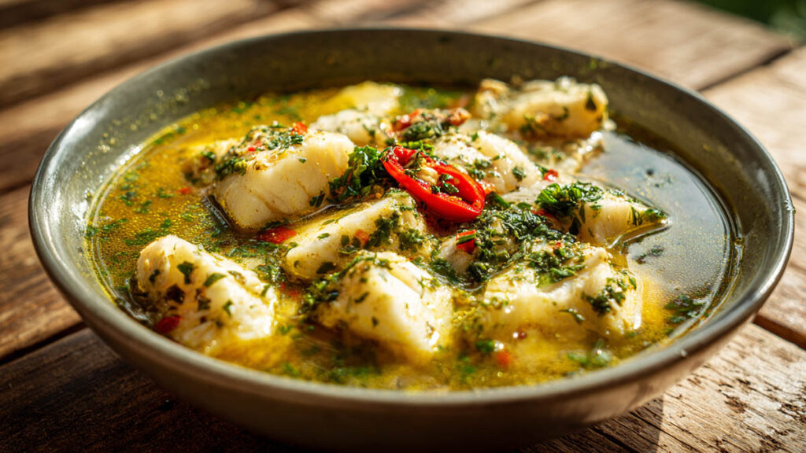

Le Blaff de poissons
Le blaff de poissons est l'expression même de la fraîcheur et de la légèreté de la cuisine côtière guyanaise. Il s'agit d'une préparation de poisson fraîchement pêché, poché à la minute dans un court-bouillon subtilement aromatisé.
Idéal pour apprécier la texture et la délicatesse des poissons locaux (comme le mérou, le machoiran ou le rouge), ce plat se distingue par son bouillon clair mais redoutablement expressif, où le citron vert et le piment jouent les premiers rôles.
L'histoire et le secret du Blaff
L'origine du mot “blaff” suscite plusieurs théories amusantes. La plus populaire raconte qu'il s'agit d'une onomatopée évoquant le bruit du poisson très frais que le pêcheur jette directement dans l'eau bouillante (« Plaf ! » ou « Blaff ! ») à peine sorti du filet.
À l'origine, c'était le plat typique des pêcheurs qui le préparaient directement sur leur embarcation ou sur le rivage avec de l'eau de mer, du citron et des piments cueillis à proximité. C'est une méthode de cuisson rapide qui permettait de consommer le produit immédiatement sans altérer sa texture délicate.
Le secret absolu d'un blaff réussi repose sur deux piliers : l'ultra-fraîcheur du poisson et la maîtrise de la température. Le poisson ne doit jamais bouillir à gros bouillons ! On le plonge dans une eau frémissante très relevée (ail, cive, persil, piment guyanais), puis on coupe souvent le feu pour laisser le poisson pocher doucement à couvert. Le jus de citron vert est ajouté au tout dernier moment pour garder sa vivacité et sa note acidulée caractéristique.
Traditionnellement, le blaff se déguste très chaud, souvent dès le matin par les amateurs de saveurs matinales relevées, accompagné de dachine, de manioc ou d'un peu de riz blanc.